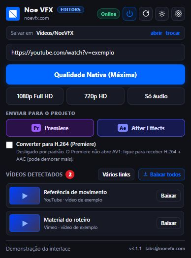

Encontrou. Gostou. Enviou.
Durante a pesquisa no seu navegador Chromium, uma referência já pode seguir para o projeto aberto no Premiere ou After Effects.
O botão aparece sobre o vídeo.
Passe o mouse sobre o player. Clique no ícone azul para abrir o menu do Downloader. Ele pertence à extensão, não ao site. Você pode arrastá-lo para outra posição; sua posição é lembrada por site.
Para usar a referência no projeto.
- Deixe o editor aberto com o projeto salvo.
- No menu sobre o vídeo, encontre Enviar para o projeto.
- Escolha Premiere ou After Effects.
- Acompanhe o download e a preparação de compatibilidade, se necessária.
- Confira o arquivo na pasta/bin
_Noe VFX Downloaderdo projeto.
Esse envio usa a qualidade padrão configurada. Os botões 1080p, 720p, Nativa e Só áudio do menu são atalhos de download para sua pasta. Para definir qualidade e destino do projeto no mesmo pedido, use a tela Vários links ou o painel Adobe.
O popup é seu outro ponto de partida.
Abra o ícone do Downloader na barra do Edge. O campo de endereço permite usar a página atual ou colar outro link. A lista mostra os vídeos detectados com miniaturas; o botão de cada item baixa aquele vídeo.

O botão de atualizar procura novamente os vídeos. A engrenagem abre as configurações. Os controles de tema e de visibilidade do ícone ajudam a ajustar o uso diário. Se a aba ficou aberta durante uma atualização da extensão, dê F5.
Vários vídeos: escolha pelo cenário.
| Você tem… | Use… | Destino |
|---|---|---|
| Vários vídeos detectados na mesma página | Baixar todos os vídeos desta página | Pasta de downloads configurada |
| Uma lista de links de páginas diferentes | Vários links no popup | Pasta padrão, outra pasta ou projeto Adobe |
| Links do roteiro e o editor já aberto | Painel Noe VFX for Editors | Pasta do trabalho e projeto |
Cole um link por linha. Textos que não forem endereços e links repetidos são ignorados. Escolha a qualidade e o destino antes de usar Baixar tudo. A compatibilidade H.264 fica ligada quando o destino é o projeto.
Em feeds, escolha o vídeo certo.
Passe o mouse sobre o vídeo desejado e use seu botão integrado. Em sites que trabalham com pedaços de mídia ou vídeos blob, é importante usar o link identificado pela extensão, e não copiar um fragmento de rede. Se a lista estiver vazia, dê play por um instante e procure novamente.
Os testes simulados cobrem Instagram, TikTok, X, Facebook, Pinterest, G1 e players comuns. A disponibilidade real varia com o site, login e mudanças da plataforma. DRM não é contornado.